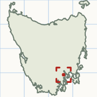

Community-made and unofficial - not a Tasmania Fire Service or State of Tasmania product. In an emergency call 000 and check alert.tas.gov.au.
A quick map of Tasmania built on theLIST: tap anywhere to get coordinates, grid references, street atlas and map book squares and the property address, all ready to copy or share. It works on a phone, and can keep maps for use without signal.
The panel starts short: address, lon/lat, grid reference, plus any feature you tapped, the route, and the fire danger and nearest fire station when those layers are on. More shows everything, grouped into Property, Location, Map references and Fire; Less goes back. Every row has a Copy button. Copy all copies the rows on show plus a link back to this exact view. Share opens your phone's share sheet (message, email, etc.).
| Row | What it is |
|---|---|
| Feature | Only when you tap a hydrant, dam, gate etc: what it is and its name or asset number. |
| Address | Property address of the land parcel under the pin (theLIST cadastre). The full view adds title (volume/folio), PID, tenure and area. |
| Lon, Lat / Lat, Lon | Decimal degrees, both orders, for whichever the other end wants. |
| MGA2020 z55 | Easting and northing on the grid of the chosen datum (GDA2020 unless switched to GDA94 in Tools). |
| Grid ref | 6-figure grid reference (100 m square). |
| Street atlas | Street atlas page and square, e.g. SA-188-A7 - the reference usually given with a callout
(urban and fringe areas only). |
| Elevation | Height at the pin in metres above sea level (AHD), from the Tasmania 2 m elevation model. Needs signal; reads a small piece of the model for each new area. |
| Map book | Map book page and square, e.g. MB356 C4. |
| MGA94, DMS, Deg min | In the full view: the other datum's easting and northing, degrees-minutes-seconds and degrees-decimal-minutes. |
Type into the search box and press Enter (Go on a phone keyboard). It works out what you gave it:
| You type | It finds |
|---|---|
12 pillinger | An address. Only the start of the street name is needed; number, street type
and suburb are optional (12 Pillinger Drive, Fern Tree, 3/20 mount view cres).
Several matches give a pick list, nearest first. |
pillinger | The street; a pick list if there is more than one. |
styx road, styx rd, mount lloyd | Roads and tracks by name, including
remote ones with no addresses, and places (towns, localities, hamlets). A road is highlighted along its whole length;
tap the map to pin a spot on it. Abbreviations like Rd, St, Mt work. Add the locality to pick one of many: browns road fern tree (or browns fern tree) goes straight to that one wherever the map is. Pick lists show each road's locality and put those in the locality you typed first, then the nearest to the map view. |
stoney ridge | A property name from the land title records (farm and homestead names, some reserves),
when nothing else matches. Matches the start of the name or of any word in it; add a locality to narrow it
(stoney ridge deviot). Not every property has a name recorded. |
265 522 | Grid reference (4, 6, 8 or 10 figures), taken in the 100 km square nearest the map view. The pin goes in the centre of the square. |
SA-188-B6, SA188B6, sa 188 b6 | Street atlas square. SA188 alone shows the whole page;
pages with a suffix work too (SA 226E B6). |
MB356 C4, 356c4 | Map book square. MB356 alone shows the whole page. |
147.3257, -42.8821 | Longitude, latitude (or the other way round - it can tell in Tasmania). |
526598 5252225 | MGA easting and northing, in the chosen datum (GDA2020 unless switched) unless labelled MGA94 or MGA2020. |
42 52 55.6 S 147 19 32.5 E | Degrees minutes seconds, or degrees and decimal minutes, with or without the symbols. |
Lines copied from the pin panel (for example Grid ref: 265 522 or Address: ...) can be pasted straight in.
Misspelt street names are not matched yet - try fewer letters (pill).
With a pin down, tap Route in the panel. It finds the nearest junction on a main road (a highway, arterial or sub-arterial road where two differently named roads meet) by road distance, draws the route from there to the pin, and zooms out to show both. The Route row reads like a radio description, for example:
From Huon Road / Summerleas Road: take Summerleas Road 470 m, then right onto Middle Track (track, 4WD) 610 m;
the pin is 50 m off the road. Total 1.1 km.
From... in the pin panel routes to the pin from a second point: My location, or Tap the map (the next tap sets the start, marked A, and leaves the pin where it is). Two choices:
One way or Circuit. Circuit adds a way back from the pin by different roads where they exist (dashed teal), with the round-trip distance and time and how much of the way back repeats the way there.
The result gives the distance, a rough time at nominal speeds for each road type, how much is unsealed, track or 4WD, any gates or barriers passed, and turn-by-turn directions. It works for points up to 120 km apart, and offline where roads were saved with Offline maps.
theLIST shows which roads join up, not whether they are open. Forestry and private roads may be gated, locked or closed, and gate data is incomplete. Check before relying on it.
BOM in the pin panel opens the Bureau of Meteorology forecast for the nearest town, suburb, village or hamlet to the pin (the message says which place and how far away). The Bureau names its location pages after OpenStreetMap places, so the map keeps a list of Tasmanian OpenStreetMap places (refreshed monthly; ODbL, © OpenStreetMap contributors) to find the nearest one. No weather data is copied into this map. If the list cannot be loaded it opens the Bureau's site search for the locality instead.
Wind: every pin gets a Wind row (under Fire in More) with the forecast wind now - direction it blows from, mean speed and gusts in km/h - and a Wind next 12 h row every 3 hours. A blue arrow through the pin points the way the wind is blowing (downwind), longer for stronger wind. These come from a weather model via Open-Meteo (free for non-commercial use), not a measurement: on slopes, in gullies and on ridges the real wind can be very different. Wind observed links to the latest observations page of the nearest Bureau weather station (for example kunanyi / Mount Wellington or Hobart), which shows measured wind, gusts, temperature and humidity every 10 to 30 minutes. Wind needs a connection; it is not saved for offline use. This is a quick guide only - always go by TFS and Bureau fire weather warnings.
Wind rose (in Tools, a proof of concept) shows which way the wind usually comes from around Fern Tree, Hobart and Grove, by season. It opens on spring and summer, mornings beside afternoons on the same scale - the pattern to watch is hot north-westerlies in the morning and a sea breeze from the south-east later in the day. Float on map keeps a small rose in the corner of the map for whichever point is nearest the middle of the view, with the season and hours you picked; tap it to open the full panel. Petals point where the wind comes from; their length is the share of hours and the shading is the mean wind speed. Hot, dry afternoons keeps only afternoon hours of 25 °C or more with humidity of 30% or less - the fire weather that matters most. It is built from modelled hourly history (ECMWF IFS, about 9 km, 2017 on, via Open-Meteo) and refreshed yearly, so the mountain's sheltering and funnelling are smoothed out; the Bureau's measured wind roses for Hobart are linked for comparison. Weather data by Open-Meteo.com (CC BY 4.0), from ECMWF open data.
All three come from theLIST emergency management data (State of Tasmania), which copies BOM, TasALERT and agency fire records.
Fire (red F), ambulance (green A), police (navy P) and SES (orange S) stations from theLIST emergency management data, from zoom 8; emergency meeting points (teal M, from zoom 10, with helicopter access and mobile coverage where recorded) and currently activated evacuation centres (purple E). Tap one for its details.
With Stations on, the pin panel also shows the Nearest fire station by road (and the straight-line distance), worked out on theLIST road network the same way as Route.
Contour lines drawn on the phone from the Tasmania 2 m elevation model, from zoom 11. Tap the box at the top right
(Contours ... - settings) to set the rules: interval (Auto goes from 100 m zoomed out to 1 m at street level, or fix it
at 1 to 100 m), which lines are bold and labelled (every 5th by default), colour (white suits aerial photos),
heights to highlight in red (e.g. 300, 550), and a band of heights to shade (e.g. 400 to 600 m).
Settings are kept on this device. Heights are metres above sea level (AHD); Tasmania only.
Find a layer... at the bottom of Layers searches all of theLIST's public map layers (about 1,150). Type a few words
(fire history, soil, zoning, heritage); common words are widened, so
fire also finds bushfire and burn plan layers and school finds education layers. With no words,
browse by theme. What's here? asks every theLIST service which layers have something at the pin (or the middle of
the map) and lists them with what they say - a way to find a layer by place rather than by name.
Tap Add to put a layer on the map. Layers you add are listed at the top of the sheet with an opacity slider, a legend and Remove, and are kept on this device. Close the sheet and they stay listed in a small key at the top right, with their legend and an opacity slider (tap Layers there to fold it, edit to reopen the sheet). With a pin down, each added layer (other than image layers) gets a row in the pin panel saying what it has at the pin. Licences vary by layer; check theLIST for each dataset's terms.
MGA grid lines, 1 km when zoomed in (10 km and 100 km further out), labelled where each line meets the edge of the screen like the margin of a paper map: small leading digits, bold two-digit kilometre number.
Property boundaries from zoom 15, house numbers at zoom 18 and street addresses at zoom 19. Outlines are white on the aerial photo, dark on other basemaps. Tapping the map looks up the parcel either way.
| H | TasWater hydrant (from zoom 16) |
| D R T P | TasWater dam, reservoir, tank, pump station (also B break pressure tank, W treatment plant) - from zoom 12 |
| D P | Tasmanian Irrigation dam (with outline) and pump station - from zoom 11 |
| G B | Gates and barriers from zoom 13: G gate, B boom gate, o bollard, F fence barrier, X immovable barrier, R removable barrier, # stock grid, ? unknown. Tap for name, status and managing authority. |
Roads and tracks coloured by surface and type, so back roads stand out at a wide view: sealed minor roads dark grey, unsealed brown, vehicular tracks dashed brown, 4WD dashed red, main roads faint grey; closed roads dotted grey. From zoom 9 theLIST draws them; from zoom 12 they are drawn on the phone with gates and barriers as small black dots, and tapping a road gives its name, class, surface and status. Tapping a road highlights it (the whole named road in view) and pins the spot without selecting the parcel underneath; tap off the road to get the parcel again.
Your own notes on gates. Tap a gate (Gates layer, or a black dot on Road types) and then Gate note in the pin panel: tick whether you have a key, say which key (e.g. STT, Parks, council), add a note (chain and padlock, key on the truck ring, ring the owner first...) and the date it was last checked. Gates with notes show a yellow K.
Tap any symbol to put the pin exactly on it.
Read eastings first, then northings. For a 6-figure reference take the bold two-digit number of the grid line to the left, add tenths across the square, then do the same up from the line below. The pin panel always shows the reference for the pin, so you can check your reading.
Tools then Draw opens the drawing tools on the left: line, polygon and point, then edit (move vertices), move whole shapes, and delete. While drawing, tapping the map does not drop the pin.
.csv with a header row needs lon and lat columns (or easting and northing: MGA2020 or MGA94 if the header says so,
otherwise the chosen datum, with an optional zone column), plus an optional name or label column. A .txt (or a csv without a
header) can have one location per line in any form Go to understands: lon lat, lat lon, MGA, grid reference or DMS.
You then choose to join them into one line or keep them as separate points. For a single exact point, type it into
Go to instead. Imported coordinates are exact; snapping only applies to points you draw by hand.Without signal the map, GPS dot, grid, coordinates, grid references and coordinate go-to all keep working. Addresses, parcels, water and gates are also remembered for places you looked at while online; new searches need signal. Clear saved removes the stored maps and roads.
With Also save roads for routing ticked (the default), saving an area also keeps theLIST roads and tracks for that area, main roads and fire stations for 25 km around it, so Route, Bigger road (up to main roads) and Nearest fire station work without signal there. Areas wider than 60 km save tiles only.
The 3D button on the top bar tilts the map you are looking at into 3D: same place, same basemap, draped over the terrain, and you can keep panning and zooming. Drag with two fingers (or right-drag) to tilt and turn; the compass button resets north and the mountain button turns the terrain off and on. Over Tasmania the terrain comes from the 2 m elevation model, read straight from its cloud file as you move; elsewhere (Macquarie Island, the mainland) it comes from the free AWS Terrain Tiles, about 30 m. Heights are exaggerated 1.5 times. The pin, your drawings and a route show in 3D, and tapping the 3D map moves the pin. Tap 2D to go back to the flat map where you left off.
Tools > 3D model builds a 3D model of the area in view: a round patch of terrain centred on the middle of the map, just big enough to take in the whole of the largest square that fits on screen. Heights come from the Tasmania 2 m DEM and the current basemap is draped over it; the pin shows as a red marker. Drag to turn it, pinch or scroll to zoom, two fingers (or right-drag) to pan. Height sets the exaggeration (1x is true scale; 1.5x is the default) and the N disc shows which way is north. For more detail, zoom the 3D view in on the part you want and tap Detail here: the model is rebuilt around that point, sized to the screen, with finer elevation (down to the DEM's own 2 m) and a sharper map. Detail sets how fine the grid is (Normal suits phones; High and Max are for computers and recent phones), and Wider doubles the area. Around the solid model a wire mesh of the surrounding terrain fades out with distance - it is there for context and stays coarse. Save image downloads a picture. The 3D view needs a connection and works for areas up to about 80 km across.
Tools opens in Field mode: what you need on a callout. Explore: on adds the extra tools (shaded purple): old aerial photos, archives near here, the 3D model, the wind rose and Macquarie Island. The choice is kept on this device and in shared links.
Tools > Old aerial photos (Explore) lists the historical aerial photo frames that cover the pin, or the middle of the map if there is no pin, grouped by decade from the 1930s to the 2010s, with thumbnails. Tap one to lay it over the map. It is placed by a flat guess from the frame index: its centre and size from the frame's footprint, and its turn from the direction the plane flew along that run. The film's "up" is not recorded, so use Rotate 90 and Flip until roads and coastlines line up (Reset goes back to the first guess), and Opacity to compare with today. Fill view adds the other frames from the same film (the same flight) that fall in the view, turned the same way. Georef (JSON) downloads the placement so you can load the photo in R, Python or QGIS: see the aerial georeferencing guide. Nothing is corrected for tilt or hills, so expect offsets of tens of metres, more in steep country. While one is showing, a note at the top right of the map says it is a rough fit, and a dashed box marks the frame's footprint from the index. These are raw frames, not orthophotos: the Aerial photo basemap is theLIST's orthophoto, which is corrected to the ground. Full scan downloads the original high-resolution TIFF (large). Photos and index: Department of Natural Resources and Environment Tasmania, via theLIST.
Tap a roof, a dam, a clearing or a paddock on the map and it is outlined for you by a small "segment anything" model that runs on the phone (on the graphics chip where the browser supports WebGPU, otherwise on the CPU, more slowly). Works best on Aerial photo, zoomed right in. You get the outline's area and the best-fitting rectangle's length and width - handy for measuring a shed you forgot to measure. Keep outline or Keep rectangle saves it as a drawing, so Draw shows its area and perimeter and it exports with your other drawings.
The model (10-40 MB) downloads the first time and is then cached by the browser. Nothing is uploaded. Sizes are approximate, about +/- 0.5 to 1 m zoomed in: roofs include the eaves, and tall things lean in aerial photos.
Tools > Archives near here (Explore) lists photographs, maps and plans, Public Works drawings (buildings, roads, bridges) and films in the Libraries Tasmania / Tasmanian Archives catalogue whose titles name a place near the pin (or the middle of the map). Nearby places with items show as brown dots and as buttons; pick one, filter by a word or year, and tap a title to open its catalogue page. Items are matched only by the place named in the title (a "?" marks a name that is also a common word or surname), so "near here" means "names this town or locality". Catalogue: data.gov.au (CC BY 4.0), open-access items, as of 2021. Copies of archive items are for private research; other uses need permission from Libraries Tasmania.
It then opens full screen from its own icon, and works offline for saved areas.
lunamap is open source: github.com/mdsumner/lunamap. Found a problem or have an idea? Open an issue (or tell whoever sent you the link).